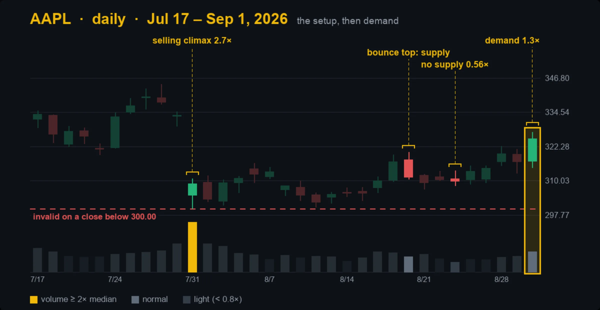
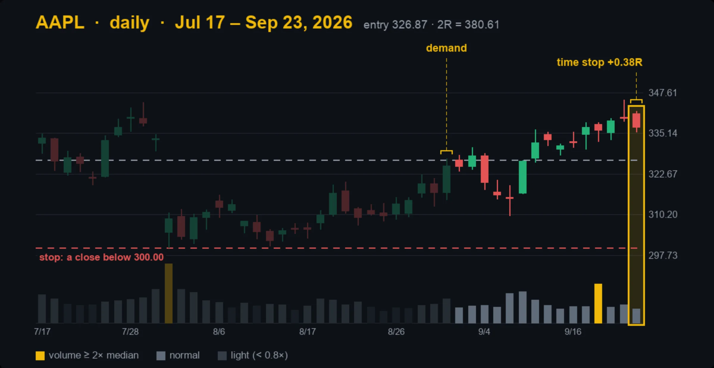
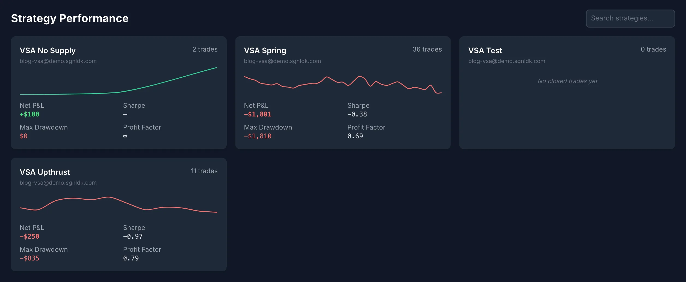
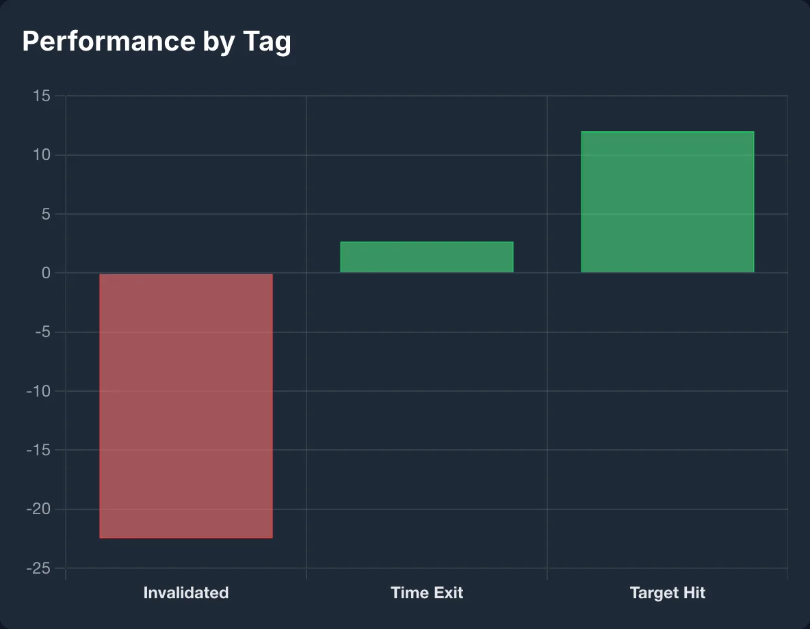
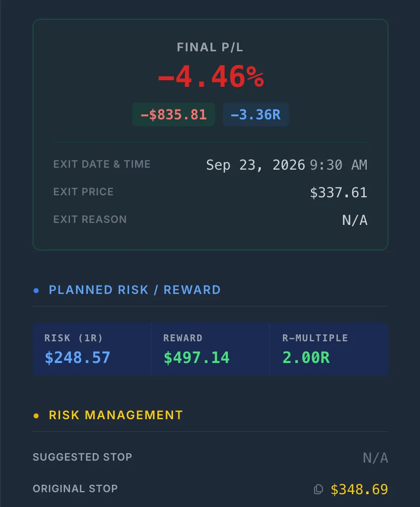
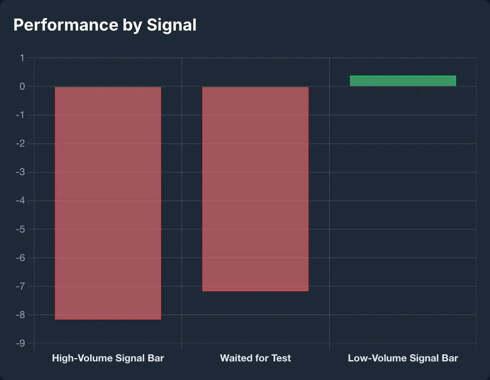

The Series: Eight Episodes, One Idea Each
Every episode teaches one VSA idea step by step, then on a dated chart built from real daily bars, with a volume panel colored by each bar's multiple of its 20-session median. They are free on YouTube, in order, in the Volume Spread Analysis playlist.
| Episode | The idea |
|---|---|
| 1. No Supply vs No Demand | A narrow, light bar can be bullish or bearish. The bars before it decide which, and a confirming bar decides whether it is a trade. |
| 2. Effort vs Result | Volume is the effort; spread and close are the result. When they disagree, someone is usually absorbing. |
| 3. Stopping Volume | Heavy volume on down bars in a downtrend, closing off the low: a warning that the selling is being bought, not a buy signal on its own. |
| 4. The Test | A lower low back toward an earlier heavy-volume low, on lighter volume, closing in its upper half. Then wait for demand. |
| 5. Springs and Shakeouts | Inside a range, a break below support that closes back above it. A low-volume spring is the stronger form; a high-volume one needs a test. |
| 6. The Upthrust | The mirror image: pushes up, usually to a new high, and closes on or near its low. Later rallies fail below its high. |
| 7. The Buying Climax | Ultra-high volume and wide spreads at a new high after a long run, often over several bars. |
| 8. Reading the Whole Story | The signals in sequence: read the background first, then the bar, then wait for confirmation. |
Why VSA Needs a Journal More Than Most Methods
A moving-average crossover is the same trade every time. A VSA signal is not. Episode 1 opens with two quiet bars that look alike and lead to opposite moves, because VSA is read in context: a narrow, light bar is no supply after a selling climax and no demand after a rally. The judgment is the method.
That makes VSA hard to evaluate from memory, for three reasons:
- You remember the textbook ones. The spring that ripped is vivid. The four that were invalidated a week later are not, and they are the ones that decide whether springs pay you.
- Your definition drifts. “Light volume” becomes 0.9× one week and 0.6× the next, and a bar that closed up gets counted as no supply because the chart looked right. Unless the numbers are written down at the time, you cannot tell later which version of the signal you were trading.
- The context is the variable. If the background decides the meaning, the background has to be in the record, or you can never check whether it actually did.
What to Record on Every VSA Trade
None of this is on a broker statement. It has to be written down as it happens, while you still know why you are watching the trade.
| Field | What to write | Where it goes in SignalDeck |
|---|---|---|
| The signal | No supply, test, spring, upthrust. One name per setup, used the same way every time. | Strategy (one per setup) |
| The signal bar | Volume as a multiple of the 20-day median and against each of the two prior bars; spread against the average; close location; up or down on the prior close. | A dated trade note |
| The background | The last climax, where the bar sits in its range, whether a test came. Whatever you actually judge it by. | Signals |
| The invalidation line | The close that proves the setup wrong. Not a round number. | Original stop, and R from it |
| The confirmation | The confirming bar and its date, and the price you could have had without waiting for it. | A later note on the same trade |
| The chart | The picture you were looking at, with the bars marked. | Entry and exit screenshots |
| The exit | Target, invalidation or time stop, and the R you actually realized, not just the R you planned. | A tag, and the trade's realized R |
The split between signals and tags is deliberate. Signals hold what you knew at entry, so trades can be compared fairly. Tags hold what happened afterward. Mixing the two lets hindsight into the comparison: trades that ran in your direction will tend to look better, because those are the ones that got their confirming bar.
The definition itself belongs in an entry checklist, so the shape check happens before the order, not after. Hold your own trades to the standard the series' chart examples were held to: if a clause of the definition fails, it is a different trade, not the same trade with a softer description.

One Trade, Logged End to End: AAPL No Supply
This trade, like every screenshot in this article, is from a demo account. Its trades were generated mechanically by rules (described in the next section), entered after the fact, and given notes dated to the sessions they describe. In your own journal, each note is stamped when you write it. Every price and volume figure below is from Polygon daily bars. AAPL is one of only two no-supply trades the rules produced, and it was chosen because it shows every stage.
- The climax. On July 31, 2026, AAPL opened 8.6% below the prior close, at $304.81, on 2.71× its 20-day median volume, made a low of $300.00 and closed at $308.91, 83% of the way up its range. The usual VSA reading of heavy volume that closes well off the low is absorption. A gap that size usually follows news, though, and episode 1's caveat applies: check the headline before reading it as pure supply and demand.
- The bounce, and a warning. The $300.00 low held. The bounce topped on August 20 at $320.28, on a wide bar that closed near its low: a sign of selling, though on below-normal volume (0.85×).
- The no-supply bar. August 25 closed down $0.44 on 0.56× median volume: 75% of the previous session's volume and 55% of the one before. Its spread was 0.84× average, so narrow, but only just. A down bar, lighter than both bars before it.
- Not a trade yet. Episode 1 is explicit: don't buy the quiet bar, wait for the confirming close. August 26 closed up, but on only 0.75× volume, which is not confirmation.

Demand arrived on September 1: a wide up bar (2.07× the average spread) on 1.31× volume, closing at 83% of its range and above the $320.28 bounce high. The trade was entered at the next open, $326.87, with the idea wrong on a close below $300.00. That is $26.87 of risk, so 2R was $380.61. Price rose as high as $345.34 but never reached it, and the time stop (15 sessions after the confirming bar) closed the trade on September 23 at $337.02: +0.38R.
Here is the question the journal exists to answer. Buying the quiet bar at the August 26 open of $310.30, against the method, would have cost $16.57 a share less, and its own 2R target of $330.90 was reached on September 11. On this one trade, waiting cost most of the result. One trade cannot say whether that is the rule or the exception. A record of the confirmed price and the unconfirmed price on every no-supply trade can.


We graded the setup B rather than A in the post-mortem, because the no-supply bar was only just narrow and the bounce top had closed weak. The post-mortem records the question, not a conclusion.

What 49 Rule-Generated VSA Trades Showed
To show what a journal does with many trades, we filled the demo account mechanically, using the series' own definitions and entry rules on the same Polygon daily bars the episodes were built from:
- Universe and dates: the 50 US stocks and ETFs already in the series' data cache (today's large caps plus index, sector, commodity and bond ETFs, so survivorship bias applies), with signals from January 2025 to September 2026.
- Signals: every signal bar had to pass every clause of its definition, plus shape checks we added on top of the taught definitions (a spring opens above support with a real lower wick and closes back above it, inside a range; an upthrust opens below resistance with a real upper wick; a test makes a lower low; a no-supply bar closes down).
- Confirmation: no trade was taken on the signal bar. Each waited, for up to 20 sessions, for a wide bar (1.2× average spread or more) on at least normal volume (1× the 20-day median, the series' yardstick), closing in the top third and up on the day (bottom third and down for an upthrust). Springs on at least normal volume first needed a test: a later bar back near the spring low on under 0.8× volume.
- Execution: entry at the next open after the confirming bar; out at 2R, on a close beyond the invalidation line (at the next open), or 15 sessions after the confirming bar; one position per ticker at a time; $250 of risk per trade.
The rules were not tuned to the results. The first version of this demo did break episode 1's main rule: it bought the signal bar itself. A review against the course caught it, and rebuilding it to wait for confirmation changed every number below That is a reason to write your rules down. This is not a backtest of VSA and not a recommendation. Forty-nine trades is a small sample, and VSA traded by a person uses judgment that rules cannot.

| Setup | Trades | Total R | R per trade |
|---|---|---|---|
| No supply (long) | 2 | +0.41R | +0.21R |
| Test (long) | 0 | – | – |
| Spring (long) | 36 | −7.20R | −0.20R |
| Upthrust (short) | 11 | −0.99R | −0.09R |
| All | 49 | −7.78R | −0.16R |
Four things a VSA trader would want to know from this, none of which a chart shows:
1. Waiting for confirmation makes the clean setups rare
| Setup | Signal bars that met the definition | Confirmed in time | Traded |
|---|---|---|---|
| Spring | 194 | 41 | 36 |
| Upthrust | 26 | 13 | 11 |
| No supply | 6 | 2 | 2 |
| Test | 1 | 0 | 0 |
In 20 months across 50 tickers, the full no-supply sequence ending in confirmation appeared twice, and the test never confirmed. Most spring bars either broke their line or went 20 sessions without a confirming bar. A journal tells you how often your signal actually occurs, which tells you how long it will take to learn anything about it. At two no-supply trades in 20 months on this universe, that is years.
2. The stop is a close, so losses run past 1R
The series defines invalidation as a close beyond the line (for the upthrust, a strong close on good volume), and this demo acted on each one at the next open. Fifteen trades were invalidated, and they averaged −1.50R, not −1R: 13 of the 15 lost more than the risk they planned. Had each cost exactly 1R, the whole sample would have finished at −0.30R instead of −7.78R, so the overshoot accounts for nearly all of the loss. That is not an achievable result, though: a hard stop at the line would also have cut five other trades that traded through it during the day and recovered (one of them a 2R winner), and that version finishes near −8.6R, worse than the close-based line.

JPM shows how. A spring confirmed on September 15, 2026, and the trade was entered at $353.38 the next morning, with the spring low of $348.69 as the line: $4.69 of risk. On September 16 it closed at $348.92, 23 cents above the line. On September 22 a wide down bar on 2.08× volume closed at $340.00, and the exit at the next open, $337.61, was −3.36R. XLY lost −3.25R for the other reason a close-based stop overshoots: its line was only 75 cents below a $114.61 entry, so a modest miss was several times the planned risk.
The journal exposed something else about those two trades. On both, the confirming bar had itself traded below the line during the day before closing back above it: JPM's September 15 low was $343.07, under its $348.69 line, and XLY's March 9 low was $110.99, under $113.86. The rule kept a line that the market had already broken intraday. A trader looking at the chart would probably have redrawn it, or passed. That is a flaw in the rule, found by reading the worst trades one by one.

None of this says a close-based line is wrong; it is what the method teaches, and as the hard-stop comparison shows, it kept trades that an intraday stop would have cut. It says the planned R is not the R you will realize, and that only a record of both shows by how much. What you do about it (a minimum distance to the line, redrawing the line when the confirming bar breaks it, or a hard limit some way beyond it) is a rule you can then test.
3. Springs by volume: no conclusion yet
Each trade carried a signal for its signal bar's volume. Low-volume springs (under the 20-day median), which only had to wait for confirmation, made −0.03R over 20 trades. Higher-volume springs, which waited for a test and then confirmation, lost −7.17R over 16, or −0.45R a trade. Episode 5 says a low-volume spring is the stronger form, and the totals lean that way. But the gap is JPM and XLY, the two stale-line trades above: without them, the other 14 tested springs made −0.56R, close to the low-volume springs' −0.03R. Sixteen and twenty trades cannot separate either from noise. It is a question to keep logging, not a finding.

4. Most trades never resolved
Twenty-eight of the 49 trades neither reached 2R nor broke their line within 15 sessions, and ended on the time stop, for +2.7R between them. That makes the time stop, a rule the series never sets, one of the most important rules in the sample. If your own journal shows the same, it is the rule to examine first.
Setting Up a VSA Journal in SignalDeck
- One strategy per setup (Setup → Strategies, in the profile menu), with the definition, the confirmation rule and the exits in its notes, so the definition you trade is the definition on file.
- Signals for what you knew at entry (Setup → Signals): the signal bar's volume class, whether a test came, where the bar sat in its range. Keep them to things you knew before the order.
- Tags for the exit: target hit, invalidated, time exit.
- An entry checklist with the shape checks and the confirmation, set as a hard gate in Trade Preferences if you want it enforced.
- On each trade: the stop at the invalidation line, a note with the signal bar's numbers, a note when confirmation comes (with the price you could have had without it), and your chart as the entry and exit screenshots.
Then read the results by strategy on the Runs page, and by signal and tag under Analytics → Quant, all in R. The journal does not tag VSA bars for you, and none of the backtester's built-in strategies is a VSA strategy, so the signal on your own trades has to come from you. What it adds is a running count of how each signal you trade has actually done, without you building or maintaining the formulas. You can also connect an AI assistant such as Claude or ChatGPT to the journal and ask about your trades in plain English.
What to Do With This
Watch the series in order, starting with episode 1. Then pick the one or two signals you actually trade, write their definitions and your confirmation rule down as a checklist, and log every trade with the signal bar's numbers, the price you could have had without waiting, and the R you realized. Twenty trades is where a signal stops being an anecdote, not where it is proven; read it by background only once each background has twenty of its own. The chart teaches you the bar. The journal tells you whether it pays you.
Frequently Asked Questions
What is Volume Spread Analysis (VSA)?
Volume Spread Analysis reads each bar as effort and result. Volume is the effort. The spread (high minus low) and where the bar closes in its range are the result. When effort and result agree, the move is more likely genuine; when they disagree, for example heavy volume on a narrow bar, or a push to new highs that closes near its low, someone is usually absorbing or distributing. VSA grew out of Richard Wyckoff's work and was developed by Tom Williams. It is always read in context: the same bar means different things after a long fall and after a long rally.
What is the difference between no supply and no demand?
Both are narrow bars on light volume, so on their own they look alike. No supply is a down bar on less volume than either of the two bars before it, appearing in a pullback after a selling climax has held: sellers are not showing up, which is bullish. No demand is an up bar on light volume near the highs after a rally and a heavy bar that closed off its high: buyers are not following through, which is bearish. The bars before the quiet bar decide which one it is, and neither is a trade until a wide bar on above-average volume confirms it in its own direction.
What should I record in a VSA trading journal?
Record the signal by name, and the signal bar itself: its volume as a multiple of the 20-day median and against each of the two prior bars, its spread against the average, its close location, and whether it closed up or down on the prior close. Record the background (the last climax, and where the bar sits in its range), the invalidation line, the confirming bar and its date, the price you could have had without waiting, and the R you actually realized, not just the R you planned. A broker statement has none of this.
Does SignalDeck detect VSA signals automatically?
Not in your journal, and not in the backtester. SignalDeck's own scanner runs several VSA-based strategies, such as stopping volume, shakeout and no supply, but the trades you take and log are labeled by you, and none of the backtester's built-in strategies is a VSA strategy. You record the signal yourself: each setup as its own strategy, what you knew at entry as signals, the exit as a tag, the bar's numbers in a dated note, and your chart as a screenshot. SignalDeck then breaks the results down by strategy, signal and tag in R, without you building or maintaining the formulas.
Related Articles
Why Journal Trades at All
One net number, two opposite verdicts: why results need a strategy label.
Stock Trading Journal: When Your Stop Can Gap
Planned R versus realized R when a stock opens through your stop.
Trading Journal Spreadsheet
Where a spreadsheet journal breaks at the second strategy.
What Is an R-Multiple?
Measuring every trade against the risk you planned to take.
Start tracking which VSA signals pay you
Log each setup as its own strategy, record the bar and what you knew at entry, and see your results by signal in R. Free during beta; Pro is $30/mo and Elite $50/mo when billing launches.